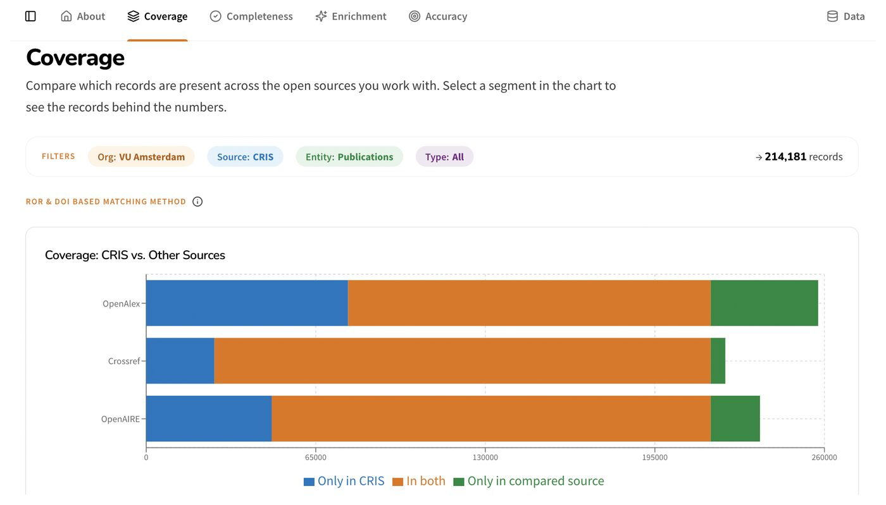
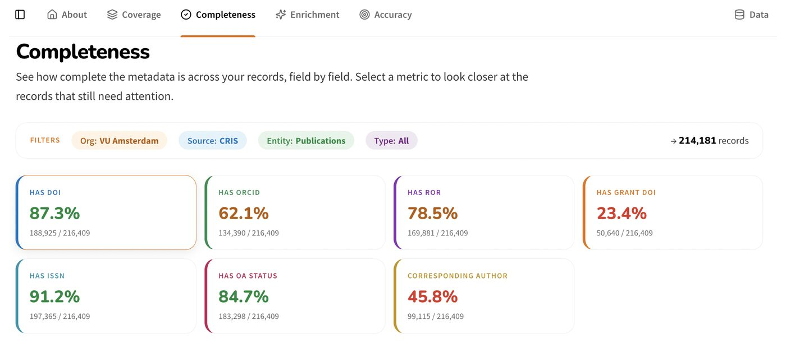
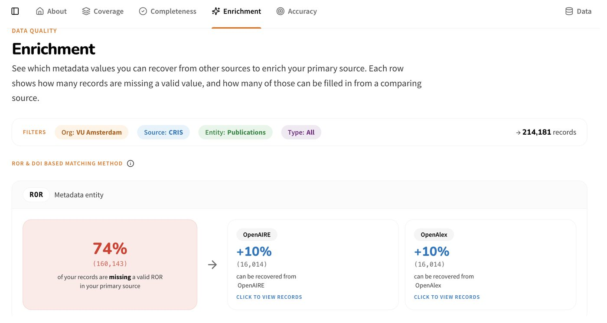
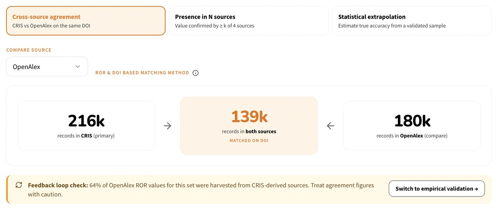

Barcelona Declaration Conference · Berlin · 24–25 November 2026
Where do PIDs
actually break?
ORI Quality Monitoring: lessons from monitoring and improving the quality of Dutch open research information
A dashboard that turns Barcelona Declaration commitments into concrete, institution-level goals.
Co-designed with the Dutch Barcelona Declaration signatories, so what gets measured reflects where better metadata brings real value, and what it takes to close the gaps.
From consultation to metrics to dashboard
Consultation
14 use cases from 10 organisations: reporting, assessment and analysis. Fix three elements first: DOIs, ROR and ORCID.
Framework report · doi.org/10.5281/zenodo.18667698
Metrics
What to measure and how, comparing CRIS with OpenAlex, OpenAIRE and Crossref. Every gap is linked to an intervention, with its effort and impact.
Metrics report · doi.org/10.5281/zenodo.23682960
Dashboard
Pick your organisation, source and entity type. See your gaps on four dimensions and decide where to act. Onboarding for signatories this autumn.
ori-dashboard.surf.nl
Four questions every institution can now answerExample views from the dashboard (illustrative data, from the metrics report)
CoverageIs our output in the open indexes?
Records only in your CRIS, in both, or only in OpenAlex, Crossref or OpenAIRE.

CompletenessHow many records lack an ORCID?
The share of records with a valid DOI, ORCID, ROR, grant DOI, ISSN, OA status and corresponding author.

EnrichmentWhat can other sources fill in?
Missing values in your source that OpenAIRE or OpenAlex already have, ready to recover.

AccuracyIs that ROR affiliation right?
Where sources disagree, and which one is wrong: checked against raw affiliation strings.

Fully open, behind the scenes
- A public data lake (DuckLake, Parquet, SURF Object Store) with OpenAlex, OpenAIRE, CRIS and OpenAPC: every number is reproducible.
- Open pipelines from raw snapshots to bronze, silver and gold.
- Described for humans and AI: skills and an MCP server let non-technical users build transparent, auditable reports.
Reflections
What worked
- Co-design gave metrics that institutions recognise.
- Linking gaps to effort shows where to act.
What was hard
- Accuracy has no single ground truth.
- Feedback loops: sources copy each other, and their errors.
What's next
- BROCCOLI maintains the dashboard and data lake.
- Long-term governance in DURF.